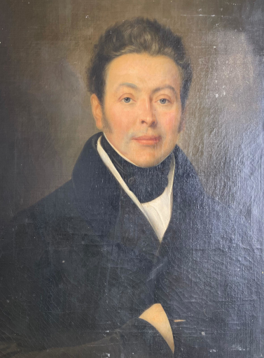
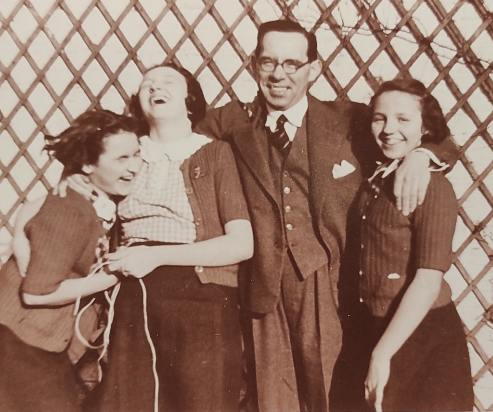

Bienvenue sur le site de la Famille Saint-Léger / Wattinne
Philippe est né en 1787, juste avant la révolution française. Par son travail, son engagement politique et son investissement industriel, il a changé sa destinée. Non seulement la sienne, mais aussi la destinée et l'histoire de la famille sur des générations !
4 générations plus tard, Claude, fut un héros de la 1° et de la 2 guerre mondiale et un grand industriel, comme ses pères.
Leur histoire, ainsi que l'histoire des branches qui sont venues enrichir notre famille à chaque mariage, vient fonder et nourrir notre propre histoire personnelle. Ce sont ces histoires que je vous invite à découvrir sur ce site, dédié à la famille.

Philippe Saint-Léger

Claude Saint-Léger, Thérès, Francine, Nicole